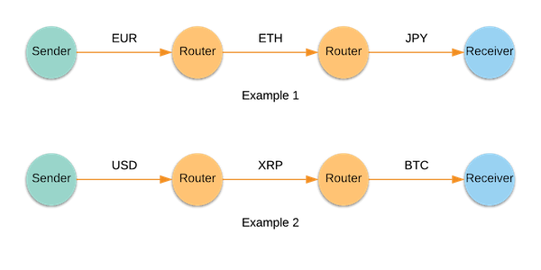
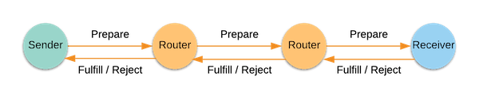

Interledger Overview
Interledger enables the seamless exchange of value across different payment networks.
Traditional payment networks operate independently from each other. Sending value is easy only if the sender and recipient have accounts on the same network, but it can be slow and expensive if they have accounts on different networks. Interledger makes it easy to transact in whatever currency or payment network you choose, because Interledger is not tied to any one company, blockchain, or currency. Using Interledger, you can send XRP to someone who wants to receive ETH, or you can send USD to someone who wants to receive EUR.
What is Interledger?
Interledger is a network of computers that enables the sending of value across independent payment networks. Similar to how the Internet routes packets information, Interledger routes packets of value. Computers on the Interledger network are called nodes. Nodes can take one or more of the following roles:
- Sender – Initiates a value transfer.
- Router – Applies currency exchange and forwards packets of value. This is an intermediary node between the sender and the receiver.
- Receiver – Receives the value.

Note: The terms Router and Connector are used interchangeably throughout the documentation.
How does Interledger work?
At the core of Interledger is the Interledger Protocol (ILPv4) , which is a set of rules that define how nodes should send value over the Interledger network. ILPv4 is a request/response protocol, where requests and responses are ILPv4 packets. Typically, a single aggregate payment from source to destination is split into multiple ILP packets. Each ILP packet contains transaction information, which is private to the nodes participating in the transaction. ILPv4 has three packet types - Prepare, Fulfill, and Reject.

The sender constructs and sends a Prepare packet as a request to the connecting router. The routers forward the packet until it reaches the receiver. The receiver then accepts or rejects the packet by sending a Fulfill packet or a Reject packet as the response. The routers relay the response from the receiver back to the sender. When the sender receives a Fulfill packet, it knows that the packet was successfully delivered to the receiver. The sender then continues to send the remaining Prepare packets until the value is fully transferred.
Interledger does not rely on any single payment network for processing value transactions. You can connect with an ILPv4 router at any time to join the network. Furthermore, Interledger sends value as tiny data packets, which makes transactions fast, secure, and inexpensive.
Tip: For a deeper dive into how ILPv4 works, see ILPv4 Flow .
Building on Interledger
Build payments into your apps or other protocols without tying yourself to a specific currency or payment network. Create accounts on our demo ledgers and start sending Interledger payments with the client libraries. Check out Getting Started for more details.
Interledger architecture
Interledger enables payments across many different types of ledgers. The Interledger Protocol Suite is comprised of four layers: the Application, Transport, Interledger, and Link protocols. To learn more, see the Interledger Architecture Overview .
Protocol specs and APIs
To dive into the technical specs, see the Interledger RFCs . Also see the documentation for the components of the reference implementation.
Security
Interledger enables secure, multi-hop payments using Hashed Timelock Agreements . As of Interledger version 4, these conditions are not enforced by the ledger, as it would be too costly and slow. Instead, participants in the network use these hashlocks to perform accounting with their peers. This accounting is used to determine in-flight balances, which are periodically settled with on-ledger transfers or payment channel claims. For a detailed description of how this works, read the Peering, Clearing, and Settlement documentation.
Next: Getting Started